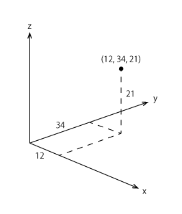
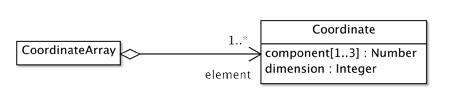

Coordinate, CoordinateArray
座標，座標列
ここでは座標及び座標列について，解説します．座標は，原点で交差する複数の座標軸上の，原点からの距離を示す数を並べて，空間中の点の位置を示す，数の列です．例えば (12, 34, 21) という数の列は，x軸方向で原点から12，y軸方向で，原点から34，そしてz軸方向で原点から21の距離にある点の位置を示します．GeoPackでは，xの値だけで示す1次元から，x，y，zの値で位置を示す３次元までの座標を記述することができます．

図１．座標は空間中の点の位置を示す数の列
座標列は文字通り座標の列で，図形として表現すると1次元から３次元空間中の折れ線になります．ただし，xの値の列になる1次元座標列の場合は，直線にしか見えません．
座標及び座標列のスキーマ

図１．座標及び座標列
座標は，１つ以上３つまでの数値をもつ座標成分 (component) の列です．成分の数を示す整数は空間の次元 (dimension) を表します．座標列は座標を要素 (element) とする，要素の列として定義されます．GeoPackでは，これらのデータ型はActionscriptのクラスとして定義しています．
座標 (Coordinate)
座標クラスの定義は大きく4つの部分に分かれます．
第１は，このクラスがもつ属性の定義です．配列を示すArray型をとる component は，1次元から３次元までの座標成分を格納します．int型をとる dim は次元の数を保存します．
第２は，インスタンス（オブジェクト）を生成するコンストラクタです．引数は３つあり，x，y，そしてzの座標を与えることができます．xだけが与えられると，次元の数は１，x，yが与えられると２，全て与えられると３になります．数を何も与えないと，1次元になってしまいますので，注意して下さい．
第３は，座標成分と次元のget/setを行う関数の定義です．これによってインスタンスは表向き，x，y，z座標をもつといえ，次元はdimensionという名前をもつことになります．
第４は，座標値を外部にXML形式で書き出したり，XMLの素片 (fragment) を読み込んで，内部形式にしたりする関数 getXML，setXML の定義です．素片とは，XML形式で書かれた，一つの意味をもつ，要素の集まりのことです．素片が集まって一つのXMLの文書 (document) になります．
package dataTypes.basicTypes
{
public class Coordinate
{
/*
attributes
*/
private var component:Array;
private var dim:int;
/*
constructor
*/
public function Coordinate(_x:Number = 0, _y:Number = Number.MIN_VALUE, _z:Number = Number.MIN_VALUE)
{
component = new Array();
if (_y == Number.MIN_VALUE) {
dim =1;
component[0] = _x;
}
else if (_z == Number.MIN_VALUE) {
dim = 2;
component[0] = _x;
component[1] = _y;
}
else {
dim = 3;
component[0] = _x;
component[1] = _y;
component[2] = _z;
}
}
/*
get and set of attributes
*/
public function get x():Number {
return component[0];
}
public function set x(_x:Number):void {
component[0] = _x;
}
public function get y():Number {
if (dim < 2) return Number.MIN_VALUE;
return component[1];
}
public function set y(_y:Number):void {
component[1] = _y;
}
public function get z():Number {
if (dim < 3) return Number.MIN_VALUE;
return component[2];
}
public function set z(_z:Number):void {
component[2] = _z;
}
public function get dimension():int {
return dim;
}
public function set dimension(_dim:int):void {
dim = _dim;
}
/*
get and set of XML fragment
*/
public function getXML():XML {
var str:String = '<Coordinate component="' + this.x;
if (this.dim > 1) str += ',' + this.y;
if (this.dim == 3) str += ',' + this.z;
str += '" dimension="' + this.dimension + '"/>';
return XML(str);
}
public function setXML(_xml:XML):void {
var str:String = _xml.@component.toString();
var cpArray:Array = str.split(',');
this.dim = int(_xml.@dimension.toString());
this.x = Number(cpArray[0]);
if (this.dim > 1) this.y = Number(cpArray[1]);
if (this.dim == 3) this.z = Number(cpArray[2]);
}
}
}
座標列 (CoordinateArray)
座標列クラスの定義は２つの部分からなります．
第1は，コンストラクタです．でも，座標列は Actionscript の ArrayList を継承し，独自の属性をもちませんので，コンストラクタがやることは，単に上位クラスの初期化だけです．ちなみにGeoPackでは，複数のインスタンスとの関連は，たいてい ArrayList で表現します．ArrayListは，要素の追加や削除がより自由にできるからです．
第2は，座標列を外部に XML 文書として書き出したり，XML 文書を読み込んで，内部形式にしたりする関数 getXML，setXML の定義です．座標列は外部に出されるときは，座標成分の羅列になります．ですから，次元の数をみて，その数で区切って，個々の座標を取り出す必要があります．少し面倒くさいですが，座標の素片を並べるよりも，データ量は少なくなります．
package dataTypes.basicTypes
{
import mx.collections.ArrayList;
public class CoordinateArray extends ArrayList
{
/*
conctructor
*/
public function CoordinateArray()
{
super();
}
/*
get and set of XML fragment
*/
public function getXML():XML {
var m:int = this.length;
if (m > 0) {
var str:String = '<CoordinateArray element="';
var crd:Coordinate;
for (var i:int = 0; i < m; i++) {
crd = this.getItemAt(i) as Coordinate;
str += crd.x + ',';
if (crd.dimension > 1) str += crd.y + ',';
if (crd.dimension == 3) str += crd.z + ',';
}
str = str.substr(0, str.length - 1) + '" ';
str += 'dimension="' + crd.dimension + '"/>';
return XML(str);
}
return XML('<CordinateArray/>');
}
public function setXML(_xml:XML):void {
this.removeAll();
var str:String = _xml.@element.toString();
var dim:int = int(_xml.@dimension);
var element:Array = str.split(',');
var m:int = element.length / dim;
for (var i:int = 0; i < m; i++) {
var crd:Coordinate = new Coordinate(0, 0);
crd.x = Number(element[i * dim]);
if (dim > 1) crd.y = Number(element[i * dim + 1]);
if (dim == 3) crd.z = Number(element[i * dim + 2]);
crd.dimension = dim;
this.addItem(crd);
}
}
}
}